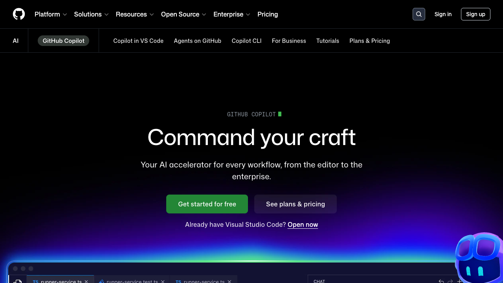
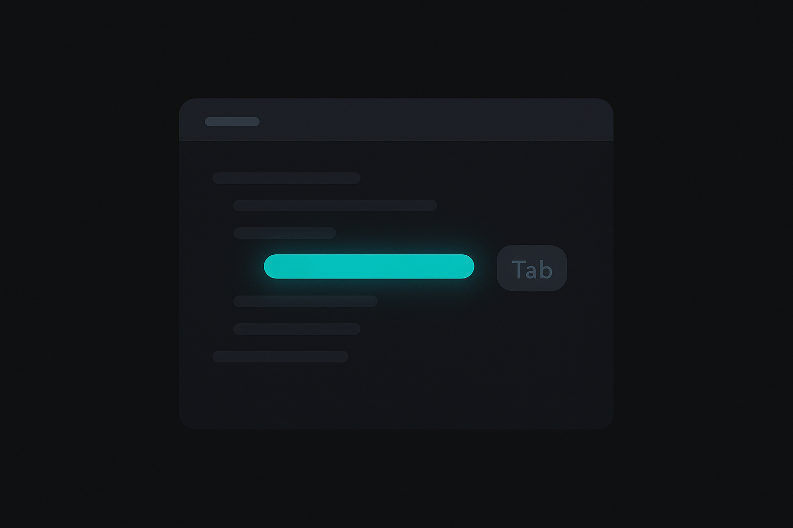

Course 05 / Layer 1 -- ツール基礎
GitHub Copilot基礎 GitHub CopilotはIDE上でAIがコードを提案する最もポピュラーなAI開発ツールです。心理的ハードルの低い入口から始めて、コメントドリブン開発、テスト自動生成まで。「こうやると、こう返ってくる」を体で覚える因果関係体験型のコースです。
初級-中級 約8時間(480分) 9 Sections + 2 Review ハンズオン比率 61%
Section 01 -- 45min(講義30 + ハンズオン15)
GitHub Copilotとは

GitHub Copilot公式ページ。個人開発者からEnterprise向けまで幅広いプランを提供している
概要
GitHub CopilotはGitHubとMicrosoftが提供するAIコード補完ツールです。エディタ上で書いているコードの文脈を読み取り、次に書くべきコードをリアルタイムに提案してくれます。2021年のテクニカルプレビューから始まり、現在はプロの開発者にとって日常ツールの地位を確立しました。
仕組み
Copilotはコードの文脈を集めてLLMに送り、次に来るコードを予測します。文脈として使われるのは、現在開いているファイルのカーソル周辺コード、エディタで開いている他のタブ、隣接するファイル、そしてコメントです。これらの情報を組み合わせて、可能な限り意図に沿ったコードを生成しようとします。
%%{init:{'theme':'dark','themeVariables':{'primaryColor':'#00A5BF','primaryBorderColor':'#007A8F','primaryTextColor':'#e8e8e8','lineColor':'#00A5BF','secondaryColor':'#1a1a1a','background':'#141414','mainBkg':'#1a1a1a','nodeBorder':'#00A5BF'}}}%%
graph LR
A["現在のファイル Copilotの基本動作フロー。複数のコンテキストからコード提案を生成する
プラン比較
プラン 価格 補完 Chat 特徴
Free $0 月2,000回 月50回 個人利用の入口。GitHubアカウントがあればすぐ使える Pro $10/月 無制限 無制限 個人開発者の標準。Agent Mode対応 Business $19/月 無制限 無制限 組織管理、ポリシー設定、IP補償 Enterprise $39/月 無制限 無制限 全機能。カスタムモデル、Bing検索統合
対応IDE
Copilotが使えるIDEは幅広く揃っています。
VS Code -- 最も機能が充実。Chat、Inline Chat、Editsすべて対応JetBrains IDE -- IntelliJ、PyCharm、WebStorm等。Chat対応済みNeovim -- インラインサジェスト対応Visual Studio -- .NET開発者向けXcode -- Swift/Objective-C開発向け
インストールと認証
VS Codeでの導入は2ステップで完了します。拡張機能マーケットプレイスで「GitHub Copilot」を検索してインストールし、GitHubアカウントで認証するだけです。認証が完了するとステータスバーにCopilotのアイコンが表示され、コード補完が動き始めます。
Freeプランの制限事項(詳細)
機能 Freeプランの制限 Pro以上
コード補完 月2,000回まで(超過後は翌月までリセット待ち) 無制限 Copilot Chat 月50メッセージまで 無制限 Copilot Edits 利用不可 利用可 Agent Mode 利用不可 Pro以上で利用可 モデル選択 デフォルトモデルのみ GPT-4o、Claude Sonnet等を選択可 パブリックコードフィルター 有効(変更不可) 管理者が設定可
1日あたりに換算すると約66回の補完と1.6回のChat。「触ってみる」には十分ですが、終日コーディングする使い方だと半日持ちません。業務利用を検討するなら、Free期間で機能を確認してからProに移行する流れが合理的です。
Tips: GitHub Education
学生はGitHub Education経由で無料でPro相当の機能を使えます。教育機関のメールアドレスがあれば申請可能です。
ハンズオン: セットアップと初めてのサジェスト 15min
目標: Copilot拡張をインストールし、最初のコード提案を体験する
Step 1: VS Code拡張のインストール(3min)
VS Codeの拡張機能パネルを開きます(Ctrl+Shift+X / Cmd+Shift+X)
検索欄に「GitHub Copilot」と入力してください
「GitHub Copilot」と「GitHub Copilot Chat」の2つをインストールします
Step 2: GitHubアカウント認証(3min)
インストール後、右下に認証を求める通知が表示されます
「Sign in to GitHub」をクリックし、ブラウザで認証を完了してください
ステータスバーにCopilotアイコンが表示されれば成功です
Step 3: 初めてのサジェスト(4min)
新規ファイルを作成し、言語モードを「JavaScript」に設定してください
以下のコードを入力します
function add(a, b) {コピー
灰色のゴーストテキストが表示されたら、それがCopilotの提案です。Tabキーで受け入れてください。
Step 4: 受入れと拒否の練習(5min)
以下の関数名を1つずつ入力し、サジェストを確認してください
function subtract(a, b) {
function multiply(a, b) {
function divide(a, b) {
function isEven(n) {
function reverseString(str) {コピー
Tabで受け入れ、Escで拒否を繰り返し、操作の感覚をつかんでください
5回以上の受入れ/拒否を体験することが目標です
サジェストが表示されない場合
ステータスバーのCopilotアイコンを確認してください。スラッシュの入ったアイコンは無効状態です。アイコンをクリックして「Enable Globally」を選択します。それでも表示されない場合はVS Codeを再起動してみてください。
Section 02 -- 50min(講義20 + ハンズオン30)
コード補完

インラインサジェストの仕組み
コードを入力すると、Copilotが灰色のゴーストテキストとして次のコードを提案します。これがインラインサジェストです。提案はリアルタイムで変化し、入力内容に応じて候補が更新されます。
キー操作
操作 Windows / Linux macOS 説明
受入れ Tab Tab 提案全体を受け入れる 拒否 Esc Esc 提案を破棄する 次の候補 Alt + ] Option + ] 別の提案候補に切り替え 前の候補 Alt + [ Option + [ 1つ前の候補に戻る 単語単位受入れ Ctrl + → Cmd + → 提案を1単語ずつ受け入れる
サジェスト品質を上げるコツ
関連ファイルを開いておく -- Copilotは開いているタブを文脈として使います。型定義ファイルやユーティリティファイルを開いておくだけで精度が上がります変数名・関数名を説明的にする -- dataよりuserProfiles、fnよりcalculateTotalPriceのように命名すると、Copilotが意図を正確に拾えますコメントを先に書く -- 日本語でも英語でも構いません。次のセクションで詳しく扱います型定義を書く -- TypeScriptの型情報は最も強力な文脈になります。interfaceやtype aliasを先に定義しておくと、実装の補完精度が格段に上がります
受入れ/拒否の判断基準
Copilotの提案を無条件に受け入れるのは危険です。以下の3点を毎回確認する習慣をつけてください。
ロジックは正しいか -- 提案されたアルゴリズムが意図した動作をするかセキュリティリスクはないか -- ハードコードされたシークレット、SQLインジェクション、XSSの可能性コーディング規約に合っているか -- チームのルールに反していないか
補完が効きやすいパターンと効きにくいパターン
効きやすい(高精度)
定型的なCRUD操作
標準的なアルゴリズム(ソート、検索、変換)
ライブラリのよくある使い方(Express、React等)
テストコード(関数名とimportから推測しやすい)
TypeScriptで型定義がある場合
コメントで意図を明示した直後のコード
効きにくい(低精度)
社内独自のビジネスロジック
外部APIの固有パラメータ(ドキュメント未公開の場合)
複雑な状態管理(条件が5つ以上絡む分岐)
データベースのスキーマ固有のクエリ
型のないJavaScriptで曖昧な変数名のコード
プロジェクト固有の規約(社内命名規則など)
型情報が補完精度に与える影響
TypeScriptの型定義はCopilotにとって最も確実な文脈情報です。同じ機能でも、型の有無で提案の精度が変わります。
JavaScript(型なし)
// 何が返るか曖昧。Copilotも推測に頼る
function getUser(id) {コピー
引数の型も戻り値の型もわからないため、Copilotは一般的なfetchパターンを提案しがち。実際のデータ構造と合わない場合が多い。
TypeScript(型あり)
interface User {
id: number;
name: string;
email: string;
role: 'admin' | 'user';
}
async function getUser(id: number): Promise<User> {コピー
引数と戻り値の型が明確なため、Copilotはfetch後のレスポンスの型変換やエラーハンドリングまで正確に提案できる。
注意: Copilotは「それっぽいコード」を生成する
LLMの特性上、文法的に正しいが論理的に間違っているコードを提案することがあります。特にエッジケースの処理や、ビジネスロジック固有の条件分岐で間違いが起きやすいため、受け入れた後のレビューは必須です。
ハンズオン: コード補完を使いこなす 30min
目標: Tab受入れ、候補切替、単語単位受入れなど、補完の操作パターンを体で覚える
演習1: 関数名だけ書いて本体を補完させる(5min)
新規JavaScriptファイルを作成し、以下の関数シグネチャだけ入力してください。中身をCopilotに任せます。
function isPalindrome(str) {
function fibonacci(n) {
function flatten(arr) {コピー
演習2: TypeScript型定義から実装を補完(5min)
interface User {
id: number;
name: string;
email: string;
age: number;
isActive: boolean;
}
// この下に関数を書き始めると、型に基づいた補完が得られます
function filterActiveUsers(users: User[]): User[] {コピー
演習3: 配列操作の補完(5min)
const numbers = [1, 2, 3, 4, 5, 6, 7, 8, 9, 10];
// 偶数だけ抽出
const evens = numbers.filter(
// 各要素を2倍にする
const doubled = numbers.map(
// 合計を求める
const sum = numbers.reduce(コピー
演習4: API呼び出しコードの補完(5min)
// JSONPlaceholderからユーザーリストを取得する
async function fetchUsers() {コピー
fetch、try-catch、レスポンスの型変換まで一気に補完されることを確認してください。
演習5: 候補の切り替え(5min)
以下のコードを入力してサジェストを表示させます
Alt+] (Option+]) で別の候補に切り替えてください
3つ以上の候補を確認し、最も適切なものをTabで受け入れます
function sortByKey(arr, key) {コピー
演習6: 単語単位受入れ(5min)
以下を入力してサジェストを表示させます
Tab全体受入れではなく、Ctrl+→ (Cmd+→)で1単語ずつ受け入れてください
途中で不要な部分をスキップし、次の行の補完に切り替えます
// メールアドレスの形式を検証する関数
function validateEmail(email) {コピー
各演習のポイント
演習1では、関数名が説明的であるほどCopilotの提案精度が上がることを実感できるはずです。演習2のTypeScript型定義は、Copilotに最も影響を与えるコンテキストです。演習5の候補切替は、1つ目の提案が最善とは限らないことを体験する演習になっています。
自走チャレンジ
テーマ: 講師がTypeScript関数を補完させたのと同じ方法で、以下の関数シグネチャだけ書いて本体をCopilotに補完させてください。
ここで動画を一度止めて、5分間取り組んでください
ヒント: 空文字、@なし、ドメインなしなどのエッジケースで手動テストしてみると、Copilotの提案の穴が見えてきます。
講師の解答例を見る
function validateEmail(email: string): boolean {
if (!email || email.trim().length === 0) return false;
const pattern = /^[^\s@]+@[^\s@]+\.[^\s@]+$/;
return pattern.test(email);
}コピー
解説ポイント: Copilotの提案を鵜呑みにせず、エッジケース(空文字、@なし、ドメイン部分なし等)で検証する習慣をつけてください。正規表現の複雑さは用途次第で、RFC準拠の完全なバリデーションが不要なら上記で十分です。
Section 03 -- 50min(講義20 + ハンズオン30)
Copilot Chat
Copilot Chatとは
Copilot Chatは、VS Codeのサイドパネルで対話形式のコード支援を受けられる機能です。インラインサジェストが「次の1行」の予測なら、Chatは「まとまった質問への回答」を担当します。コードの説明、リファクタリング提案、エラー解析、テスト生成など、開発の様々な場面で活躍します。
スラッシュコマンド
コマンド 機能 使いどころ
/explain コードの説明 読み解けないコードに遭遇したとき /fix バグ修正 エラーの原因がわからないとき /tests テスト生成 既存コードにテストを追加したいとき /doc ドキュメント生成 JSDoc、docstringを自動生成 /new 新規コード生成 スキャフォールディング
@参照
参照 対象 用途
@workspace プロジェクト全体 「このプロジェクトの構造を教えて」「エントリポイントは?」 @terminal ターミナル出力 「直前のエラーを解説して」 @vscode VS Code設定 「この設定の意味は?」「拡張機能のおすすめは?」
ChatとInline Chatの使い分け
観点 Copilot Chat(サイドパネル) Inline Chat(Ctrl+I)
起動方法 サイドバーのChatアイコン コード上でCtrl+I 対話の長さ 複数ターンの対話向き 1回の指示で完結 コード変更 回答をコピーして手動適用 差分プレビューで直接適用 適した場面 調査、学習、設計相談 部分修正、変換、コメント追加
@workspaceとコード選択の違い
Copilot Chatに質問する方法は大きく2つあります。使い分けを誤ると、欲しい回答が得られません。
方法 参照範囲 向いている質問 注意点
@workspace で質問 プロジェクト全体のファイル構造・主要コード 「エントリポイントはどこ?」「このプロジェクトの依存関係を教えて」 全ファイルを読むわけではない。インデックス化された情報に基づく コードを選択して質問 選択した範囲 + 同ファイルの文脈 「この関数のバグを見つけて」「このロジックを説明して」 選択範囲外の依存関係は考慮されにくい
プロジェクト全体に関わる質問なら@workspace。特定コードに関する質問ならコード選択。混ぜて使うことも可能で、「@workspace この関数はどこから呼ばれていますか?」のように@workspaceとコード参照を組み合わせる方法が最も精度が高くなります。
Copilot ChatのModel選択
Proプラン以上では、Chatで使用するAIモデルを切り替えられます。Chatウィンドウ下部のモデル名をクリックすると選択肢が表示されます。
モデル 特徴 向いている場面
GPT-4o 高速、バランスが良い 日常のコード質問、リファクタリング提案 Claude Sonnet 4 長文脈に強い、コード理解が深い 大きなコードベースの分析、複雑なロジックの説明 Gemini 2.5 Pro マルチモーダル対応 画像を含む質問、長いドキュメントの分析 o4-mini 推論特化(思考プロセスを可視化) アルゴリズム設計、数学的な問題
モデルごとに得意分野が異なるため、タスクに応じて使い分けるのが理想です。ただし、大半の開発タスクはGPT-4oで十分対応できるので、まずはデフォルトで使い、不満を感じた場面で切り替えを試す程度の運用で問題ありません。
Tips: Chat履歴の活用
Copilot Chatの会話はセッション内で文脈が保持されます。「先ほどの関数を」という指示が通るので、段階的にコードを洗練させるワークフローに向いています。新しいトピックに移るときは「+」で新しいスレッドを開始してください。
ハンズオン: Copilot Chatを使いこなす 30min
目標: Chat機能で質問、説明、リファクタリング、エラー解析、テスト生成、ドキュメント生成を体験する
演習1: コードの説明を聞く(5min)
以下のコードをファイルに貼り付けてください
コード全体を選択し、Copilot Chatで「このコードを説明してください」と質問します
function debounce(fn, delay) {
let timer;
return function(...args) {
clearTimeout(timer);
timer = setTimeout(() => fn.apply(this, args), delay);
};
}コピー
演習2: リファクタリング提案(5min)
以下のコードを選択し、Chatで「この関数をリファクタリングしてください」と依頼します
提案されたコードと元のコードを比較してください
function processData(data) {
let result = [];
for (let i = 0; i < data.length; i++) {
if (data[i].status === 'active') {
if (data[i].age >= 18) {
if (data[i].email) {
result.push({
name: data[i].name,
email: data[i].email,
age: data[i].age
});
}
}
}
}
return result;
}コピー
演習3: エラー解析(5min)
以下のエラーメッセージをChatに貼り付けてください
「このエラーの原因と解決策を教えてください」と質問します
TypeError: Cannot read properties of undefined (reading 'map')
at UserList (/src/components/UserList.tsx:12:18)
at renderWithHooks (react-dom.development.js:14985:18)コピー
演習4: /testsでテスト生成(5min)
演習1のdebounce関数を選択した状態で、Chatに /tests と入力してください
生成されたテストコードを確認し、テストケースが適切か評価してください
演習5: /docでドキュメント生成(5min)
演習2のprocessData関数を選択し、Chatに /doc と入力してください
JSDocコメントが生成されることを確認します
生成されたドキュメントがパラメータと戻り値を正しく記述しているか確認してください
演習6: @workspaceで全体把握(5min)
何かしらのプロジェクトフォルダをVS Codeで開いてください(手元のプロジェクトで構いません)
Chatで以下のように質問します
@workspace このプロジェクトのエントリポイントはどこですか? 主要なファイル構造も教えてください。コピー
プロジェクト全体を俯瞰した回答が返ってくることを確認してください。
各演習のポイント
演習2では、ネストの深い条件分岐がfilter+mapのチェーンにリファクタリングされるはずです。Copilotは定型的なリファクタリングパターンを良く知っています。演習3のエラー解析は実務で最も使う場面の1つで、スタックトレースから原因箇所を特定する力は人間を超える場合もあります。
自走チャレンジ
テーマ: 以下のサンプルコード(DL提供)をCopilot Chatに渡して、3ステップを自分の指示文で実行してください。
ここで動画を一度止めて、5分間取り組んでください
ヒント: /explain でコード説明、/tests でテスト生成が使えます。自然言語での改善依頼と比較してみると、スラッシュコマンドの守備範囲がわかります。
講師の解答例を見る
ステップ1: /explain このコードが何をしているか、関数ごとに説明してください
ステップ2: このコードの改善点を3つ挙げてください。パフォーマンス、可読性、エラーハンドリングの観点で分析してください
ステップ3: /tests このコードのユニットテストを生成してください。正常系とエッジケースを含めてくださいコピー
解説ポイント: /explain や /tests のスラッシュコマンドは定型操作を高速に行えます。一方、改善提案のような分析的な作業は自然言語で観点を指定した方が精度が高くなります。両者の使い分けを体感してください。
復習A -- 25min
復習ハンズオン A: 補完+Chatで小機能実装
復習ハンズオン 25min
目標: コード補完とCopilot Chatを組み合わせて、3つのユーティリティ関数を実装する
ここまでに習得したインラインサジェストとCopilot Chatを組み合わせて、以下の3関数を実装してください。
課題: ユーティリティ関数3つを実装
formatDate(date) -- Dateオブジェクトを「YYYY-MM-DD」形式の文字列に変換するtruncateText(text, maxLength) -- 指定文字数で切り詰め、末尾に「...」を追加するgroupBy(arr, key) -- オブジェクト配列を指定キーでグループ化してMapを返す
手順
関数シグネチャを書いてCopilotの補完で本体を生成(各3min)
Copilot Chatで各関数のテストコードを生成(各2min)
テストを実行し、必要に応じて修正(残り時間)
// utils.js
function formatDate(date) {
}
function truncateText(text, maxLength) {
}
function groupBy(arr, key) {
}
// テスト
console.log(formatDate(new Date(2026, 3, 2))); // "2026-04-02"
console.log(truncateText("GitHub Copilot は便利なツールです", 15)); // "GitHub Copilot..."
console.log(groupBy([{type:"a",v:1},{type:"b",v:2},{type:"a",v:3}], "type"));
// Map { "a" => [{...},{...}], "b" => [{...}] }コピー
formatDateが正しい日付文字列を返す
truncateTextが指定文字数で切り詰め、短い文字列はそのまま返す
groupByがキーごとにグループ化されたMapを返す
各関数のテストが通る
Section 04 -- 50min(講義20 + ハンズオン30)
インラインチャット
インラインチャットとは
コードエディタの中でCtrl+I(macOSはCmd+I)を押すと起動する、軽量な対話インターフェースです。サイドパネルのChatとは違い、コードの文脈に直接結びついた操作ができます。選択範囲に対して「TypeScriptに変換して」「エラーハンドリングを追加して」と指示するだけで、差分プレビュー付きで変更案が表示されます。
主な使い方
選択範囲への指示 -- コードを選択してCtrl+I、自然言語で指示部分修正 -- 関数の一部だけを改善する場合に最適コメント生成 -- 選択してCtrl+I、「JSDocコメントを追加して」言語変換 -- JavaScript→TypeScript、Python→JavaScriptなど
Copilot Edits(マルチファイル編集)
Copilot Editsは複数ファイルにまたがる変更を一度に行える機能です。Edit Modeに入り、変更したいファイルをWorking Setに追加し、「全コンポーネントにエラーバウンダリを追加して」のような横断的な指示を出せます。変更は差分プレビューで確認してから適用します。
Copilot Editsの具体的な操作手順
Copilot Chatパネル上部の「Edit」タブ(ペンアイコン)をクリックしてEdit Modeに切り替える
Working Setに対象ファイルを追加する。「Add Files...」ボタンから選択するか、エクスプローラーからドラッグ&ドロップ
チャット欄に変更指示を入力。「すべてのファイルでconsole.logをlogger.infoに置換して」のように横断的な指示が可能
各ファイルの差分プレビューが表示される。ファイルごとに Accept / Discard を選択
全ての変更を確認したら Done で完了
Tips: Working Setの選び方
Working Setに入れるファイルが多すぎると、Copilotが全ファイルの文脈を処理しきれず精度が落ちます。1回のEdit操作では5ファイル以内に絞り、関連性の高いファイルだけを追加するのが実用的です。10ファイル以上の変更が必要な場合は、2-3回に分けて実行してください。
%%{init:{'theme':'dark','themeVariables':{'primaryColor':'#00A5BF','primaryBorderColor':'#007A8F','primaryTextColor':'#e8e8e8','lineColor':'#00A5BF','secondaryColor':'#1a1a1a','background':'#141414','mainBkg':'#1a1a1a','nodeBorder':'#00A5BF'}}}%%
flowchart TD
A["コードを修正したい"] --> B{"修正の範囲は?"}
B -->|1行〜数行| C["インラインサジェスト 修正の範囲に応じた機能の使い分けフロー
Tips: Inline Chatの差分プレビュー
Inline Chatの結果は、変更前と変更後が色分けされた差分で表示されます。緑が追加、赤が削除。内容を確認して「Accept」で適用、「Discard」で取り消しです。盲目的にAcceptせず、差分を読む癖をつけてください。
ハンズオン: インラインチャットの操作 30min
目標: Ctrl+Iの操作に慣れ、選択範囲への指示、変換、コメント追加を体験する
演習1: JavaScriptからTypeScriptに変換(5min)
以下のJavaScriptコードをファイルに貼り付けてください
コード全体を選択し、Ctrl+I を押して「TypeScriptに変換してください。引数と戻り値に型を付けてください」と入力します
function findUser(users, id) {
return users.find(user => user.id === id);
}
function getFullName(user) {
return `${user.firstName} ${user.lastName}`;
}
function calculateAge(birthDate) {
const today = new Date();
const birth = new Date(birthDate);
let age = today.getFullYear() - birth.getFullYear();
const monthDiff = today.getMonth() - birth.getMonth();
if (monthDiff < 0 || (monthDiff === 0 && today.getDate() < birth.getDate())) {
age--;
}
return age;
}コピー
演習2: try-catch追加(5min)
以下のコードを選択し、Ctrl+Iで「try-catchでエラーハンドリングを追加してください」と指示します
async function fetchUserData(userId) {
const response = await fetch(`https://api.example.com/users/${userId}`);
const data = await response.json();
return data;
}コピー
演習3: async/awaitに書き換え(5min)
function getData() {
return fetch('https://api.example.com/data')
.then(response => response.json())
.then(data => {
console.log(data);
return data;
})
.catch(error => {
console.error('Error:', error);
throw error;
});
}コピー
選択してCtrl+I、「async/awaitで書き直してください」と入力します。
演習4: JSDocコメント追加(5min)
演習1で変換したTypeScriptの各関数を選択してください
Ctrl+Iで「JSDocコメントを追加してください」と指示します
param、returns、exampleが含まれているか確認してください
演習5: 変数名のリネーム(5min)
function calc(d, r) {
const t = d.map(x => x.v * r);
const s = t.reduce((a, b) => a + b, 0);
return { t, s };
}コピー
選択してCtrl+I、「変数名をわかりやすい名前にリネームしてください」と入力します。d、r、t、s、x、v、a、bといった1文字変数が説明的な名前に変わることを確認してください。
演習6: 複数ファイルの一括変更(5min)
Copilot Chatパネルで「Edit」モードに切り替えます(ペンアイコン)
Working Setに2つ以上のファイルを追加してください
「すべてのconsole.logをlogger.infoに置き換えてください」のような横断的な指示を出します
各ファイルの差分プレビューを確認し、Acceptで適用します
Section 05 -- 50min(講義20 + ハンズオン30)
コメントドリブン開発
コメントドリブン開発とは
コードを書く前に、コメントで「何をする関数か」を書き、CopilotにImplementationを生成させる手法です。先にコメントを書き、EnterでCopilotにコードを提案させ、Tabで受け入れる。この流れを繰り返すだけで、驚くほどの精度でコードが生成されます。
なぜ効果的か
Copilotはコメントを最重要コンテキストとして扱います。コメントの直後に来るコードを予測する精度は、変数名や型情報だけの場合よりも格段に高くなります。「何を書くか迷ったらまずコメントを書く」が鉄則です。
コメントの書き方
効果的なコメントには4つの要素があります。
目的 -- この関数は何をするのか入力 -- どんなデータを受け取るか出力 -- 何を返すか制約条件 -- エッジケースや性能要件
良いコメント vs 悪いコメント
良いコメント
// ユーザーリストをageで昇順ソートし、
// activeなユーザーのみ返す
// 入力: User[]
// 出力: User[] (age昇順、isActive===true)
// 制約: 元の配列を変更しないコピー
目的、入出力、制約が明確。Copilotは高精度なコードを生成できます。
悪いコメント
// ユーザーの処理をするコピー
曖昧すぎてCopilotが何を生成すべきかわかりません。意図しないコードが出てくる確率が高い。
Tips: 日本語コメントでも動く
Copilotは日本語コメントも理解します。「// ユーザーリストを年齢でソートする」と書けば英語と同等の精度でコードを生成します。ただし、変数名は英語の方がLLMの学習データとの親和性が高いため、コメントは日本語、コードは英語というスタイルが実用的です。
ハンズオン: コメントから関数を生成 30min
目標: コメントを設計書として書き、Copilotにコード生成させる一連の流れを体験する
演習1: データバリデーション関数(10min)
以下のコメントをコピーし、その直後にカーソルを置いてCopilotの提案を待ってください。
// メールアドレスのバリデーション
// 入力: string (メールアドレス)
// 出力: { valid: boolean, errors: string[] }
// チェック項目:
// - 空文字でないこと
// - @が1つ含まれること
// - @の前後が空でないこと
// - ドメイン部分に.が含まれること
// 制約: 正規表現は使わず、文字列操作で実装する
function validateEmail(email) {コピー
「正規表現は使わず」という制約がCopilotの生成にどう影響するか確認してください。制約を外すと正規表現ベースのコードが出るはずです。
演習2: API呼び出し+エラーハンドリング(10min)
// REST APIからユーザーデータを取得する
// エンドポイント: https://jsonplaceholder.typicode.com/users/{id}
// 入力: userId (number)
// 出力: Promise<User | null>
// エラーハンドリング:
// - ネットワークエラー → コンソールにログを出して null を返す
// - 404 → null を返す
// - その他のHTTPエラー → Error をスローする
// リトライ: 最大3回、1秒間隔
async function fetchUser(userId) {コピー
リトライロジックまで含めたコメントを書くと、Copilotがfor/whileループでリトライ処理を実装するのが確認できます。
演習3: CSVパース+集計(10min)
// CSV文字列をパースして部門別の売上合計を集計する
// 入力: csvString (string) - ヘッダー行あり、カンマ区切り
// 形式: "部門,製品,売上\n営業,SaaS A,500\n開発,ツールB,300\n..."
// 出力: Map<string, number> - キー:部門名, 値:売上合計
// 制約:
// - 1行目はヘッダーとしてスキップ
// - 売上が数値でない行は無視する
// - 空行は無視する
function aggregateSalesByDepartment(csvString) {コピー
各演習のポイント
演習1では制約条件の威力を体験します。「正規表現を使わず」と書くだけでCopilotの出力が変わる。制約を書き換えて別バージョンも生成させると、コメントの力がよくわかります。演習2のリトライ処理は、コメントなしでは生成されにくいパターンです。演習3はヘッダースキップや数値変換のエッジケース処理がコメントの制約から生成されることを確認してください。
自走チャレンジ
テーマ: 以下の仕様をコメントだけで記述し、Copilotに実装させてください。
ここで動画を一度止めて、5分間取り組んでください
ヒント: コメントに「空配列の場合」「数値型のみ」のような制約を含めるかどうかで、Copilotの出力が変わります。制約なしバージョンも試して比較してみてください。
講師の解答例を見る
// 配列内の重複を除去し、昇順ソートして返す
// 空配列の場合は空配列を返す
// 数値型のみ対応
function uniqueSorted(numbers: number[]): number[] {
return [...new Set(numbers)].sort((a, b) => a - b);
}コピー
解説ポイント: コメントの具体性が補完精度を左右します。「ソートして返す」だけだとlocaleCompareベースの文字列ソートが提案される場合があり、「昇順」「数値型」と明記すると (a, b) => a - b のパターンが出やすくなります。
復習B -- 25min
復習ハンズオン B: コメント設計からテストまで
復習ハンズオン 25min
目標: コメント設計 → インラインチャットで実装 → Chatでテスト生成の一連フローを体験する
課題: 簡易カート計算モジュール(3関数)
ECサイトのカート計算を行う3つの関数を以下のフローで実装してください。
コメントを書く -- 各関数の目的・入出力・制約をコメントとして記述(5min)Copilotで実装 -- コメントドリブンで本体を生成、インラインチャットで微調整(10min)テスト生成 -- Copilot Chatの /tests でテストを生成し実行(10min)
// cart.js
// 関数1: calculateSubtotal
// カート内の商品の小計を計算する
// 入力: items - [{name, price, quantity}, ...]
// 出力: number (小計)
// 関数2: applyDiscount
// 合計金額に割引を適用する
// 入力: subtotal (number), discountCode (string)
// 出力: { total: number, discount: number, code: string }
// 割引コード: "SAVE10" → 10%OFF, "SAVE20" → 20%OFF, 不明なコード → 割引なし
// 関数3: calculateShipping
// 配送料を計算する
// 入力: subtotal (number), prefecture (string)
// 出力: number (配送料)
// ルール: 5000円以上は送料無料、北海道・沖縄は+500円、それ以外は一律800円コピー
3つの関数すべてがコメントドリブンで生成された
インラインチャットで少なくとも1箇所の改善を行った
Copilot Chatで各関数のテストを生成した
テストが通ることを確認した
Section 06 -- 50min(講義20 + ハンズオン30)
テスト生成とリファクタリング
/testsコマンドの活用
Copilot Chatの /tests コマンドは、選択したコードに対してユニットテストを自動生成します。JestやMochaなどのテストフレームワークを認識し、プロジェクトに合ったテストコードを出力してくれます。
対応テストフレームワーク
言語 フレームワーク 備考
JavaScript/TypeScript Jest, Mocha, Vitest package.jsonの依存関係から自動判別 Python pytest, unittest pytestが優先される傾向 Java JUnit 5 アノテーションベースのテスト生成 Go testing テーブル駆動テストを生成しやすい
生成テストの検証ポイント
AIが生成したテストをそのまま使うのは危険です。以下の観点で検証してください。
カバレッジ -- 正常系だけでなく、異常系(null、空文字、境界値)がカバーされているかエッジケース -- 配列の空、0、負数、最大値などの境界条件が含まれているかモックの適切性 -- 外部依存(API、DB)が正しくモックされているかアサーションの妥当性 -- テストが本当に意図した動作を検証しているか
リファクタリング提案の活用
Copilot Chatに「この関数を小さく分割して」「デザインパターンを適用して」と依頼するとリファクタリング提案を得られます。長い関数の分割、ネストの解消、早期リターンの導入など、定型的なリファクタリングパターンの提案精度は高いレベルにあります。
AI生成テストの限界
Copilotはコードの構造からテストケースを推測しますが、ビジネスロジックの「意図」まではわかりません。「この関数は特定の業務ルールに基づいて10%の手数料を加算する」という背景知識はAIにはなく、テストケースが業務要件を満たしているかは人間が判断する必要があります。
ハンズオン: テスト生成とリファクタリング 30min
目標: /testsコマンドでテストを自動生成し、リファクタリングの流れを体験する
演習1: 既存関数にテストを生成(10min)
以下の関数をファイルに貼り付けてください
関数を選択し、Copilot Chatで /tests と入力します
生成されたテストコードをテストファイルに保存してください
function calculateTax(price, taxRate, isExempt) {
if (isExempt) return price;
if (price < 0) throw new Error('Price cannot be negative');
if (taxRate < 0 || taxRate > 1) throw new Error('Tax rate must be between 0 and 1');
const tax = Math.round(price * taxRate);
return price + tax;
}
function applyBulkDiscount(items) {
const total = items.reduce((sum, item) => sum + item.price * item.quantity, 0);
if (total >= 100000) return total * 0.85;
if (total >= 50000) return total * 0.9;
if (total >= 10000) return total * 0.95;
return total;
}コピー
演習2: エッジケースの追加(5min)
生成されたテストに対し、Chatで「以下のエッジケースのテストを追加してください」と依頼します
エッジケースを追加してください:
- price が 0 の場合
- taxRate が 0 の場合
- taxRate が 1 の場合
- items が空配列の場合
- quantity が 0 の商品がある場合コピー
演習3: テスト実行(5min)
Node.jsの場合: node --test テストファイル名 で実行できます
Jestを使う場合: npx jest で実行してください
テストが失敗した場合、エラーメッセージをChatに貼り付けて修正を依頼します
演習4: 長い関数のリファクタリング(10min)
function processOrder(order) {
let total = 0;
for (let i = 0; i < order.items.length; i++) {
let item = order.items[i];
let price = item.price;
if (item.discount) {
if (item.discount.type === 'percent') {
price = price * (1 - item.discount.value / 100);
} else if (item.discount.type === 'fixed') {
price = price - item.discount.value;
}
if (price < 0) price = 0;
}
total += price * item.quantity;
}
if (order.coupon) {
if (order.coupon.type === 'percent') {
total = total * (1 - order.coupon.value / 100);
} else if (order.coupon.type === 'fixed') {
total = total - order.coupon.value;
}
if (total < 0) total = 0;
}
let shipping = 0;
if (total < 5000) {
shipping = 800;
if (order.address.prefecture === '北海道' || order.address.prefecture === '沖縄県') {
shipping += 500;
}
}
total += shipping;
let tax = Math.round(total * 0.1);
total += tax;
return { subtotal: total - tax - shipping, shipping, tax, total };
}コピー
この関数全体を選択し、Copilot Chatで「この関数を小さな関数に分割してリファクタリングしてください」と依頼します
分割された各関数の責務が明確になっていることを確認してください
リファクタリング後のコードに対しても /tests でテストを生成し、動作が変わっていないことを検証します
リファクタリングのポイント
この関数には少なくとも4つの責務が混在しています。商品価格の割引計算、クーポン適用、配送料計算、税計算です。各責務を独立した関数に分割すると、テストしやすくなり、後からの修正も容易になります。Copilotはこの分割を的確に提案できるはずです。
自走チャレンジ
テーマ: 講師がテストを自動生成したのと同じ方法で、サンプルコード(DL提供)に対してテスト生成から改善までを一連で実行してください。
ここで動画を一度止めて、7分間取り組んでください
ヒント: /tests で最初のテストセットを生成した後、「境界値テストを追加してください」「エラーケースのテストが足りていません」のように自然言語で追加依頼すると効果的です。
講師の解答例を見る
ステップ1: /tests (サンプルコードを選択した状態で実行)
ステップ2: 生成されたテストファイルでnpx jest を実行
ステップ3: 「以下のエッジケースが未テストです。追加テストを生成してください: (1)引数が空の場合 (2)型が不正な場合 (3)境界値(最大・最小値)」
ステップ4: /tests で再度生成し、追加分をマージコピー
解説ポイント: 自動生成テストは正常系に偏りがちです。エッジケース(null、undefined、空配列、巨大入力等)は人間が指摘して追加生成を依頼するフローが実用的です。
Section 07 -- 40min(講義25 + ハンズオン15)
セキュリティとガバナンス
コード提案のライセンス問題
Copilotはパブリックリポジトリのコードを学習データに含んでいます。そのため、提案されたコードが既存のオープンソースコードと一致する可能性があります。GitHubはこの問題に対処するため「パブリックコード一致検出フィルター」を提供しています。フィルターを有効にすると、約150文字以上の一致が検出された場合に提案がブロックされます。
パブリックコード一致フィルターの仕組み
このフィルターはCopilotの提案を送信する前に、GitHubのパブリックリポジトリと照合する仕組みです。具体的には以下の流れで動作します。
Copilotがコード提案を生成する
生成された提案を、GitHubのパブリックコードインデックスと照合する
約150文字以上の連続一致が検出された場合、その提案をブロックする
ブロックされた場合は別の提案を生成するか、提案なしとする
フィルターの対象はコードの文字列レベルの一致であり、意味的な類似性(ロジックは同じだが変数名が違う等)は検出しません。GPLライセンスのコードと構造が似ているが文字列が異なるコードは通過するため、ライセンスリスクを完全にゼロにするものではない点に注意してください。
設定場所はGitHub.comの Settings > Copilot ページ。「Suggestions matching public code」の項目でBlock/Allowを選択できます。Business/Enterpriseプランでは組織管理者が全メンバーに対して一括でBlockを強制する設定も可能です。
Copilot Business管理画面
Business/Enterpriseプランでは、組織管理者がCopilotの利用を統制できます。
ポリシー設定 -- パブリックコード一致提案のブロック、Chat機能のON/OFF利用統計 -- メンバーごとの使用状況、受入れ率、言語別利用率アクセス管理 -- 特定チーム/リポジトリへの利用制限
社内ポリシー設定のポイント
設定項目 推奨値 理由
パブリックコード一致フィルター 有効 ライセンスリスクの低減 テレメトリデータ送信 無効(またはBusiness以上で管理) コードスニペットが外部に送信されるリスク 利用可能リポジトリの制限 組織の方針に合わせて設定 機密プロジェクトでの利用を制御 Chat機能 有効(レビュー文化と併用) 生産性向上の効果が大きい
セキュリティリスク
シークレットの補完提案 -- Copilotは文脈から const API_KEY = "sk-..." のようなパターンを提案することがあります。ダミー値を提案しているだけですが、習慣的にハードコードする癖がつく危険があります生成コードのレビュー必須 -- SQLインジェクション、XSS、パストラバーサルなどの脆弱性を含むコードが生成される可能性があります。PRレビューの際に「このコードはCopilotが生成した」と明記するルールを設けている組織もあります機密コードの送信 -- Copilotを有効にすると、開いているファイルの内容がGitHub/Microsoftのサーバーに送信されます。Business以上のプランではデータ保持ポリシーが明示されていますが、Freeプランでは注意が必要です
原則: Copilotの提案は「コードレビュー必須」
AI生成コードだからといって品質が保証されるわけではありません。むしろ、一見正しそうに見えて微妙にバグを含むコードが混入するリスクが人間が書く場合と異なります。通常のPRレビューに加え、生成コードの出所を意識した検証プロセスを設けてください。
ハンズオン: セキュリティ設定の確認 15min
目標: Copilotのセキュリティ設定を確認し、危険な提案パターンを理解する
演習1: フィルター設定の確認(5min)
VS Codeの設定(Ctrl+,)を開き、「copilot」で検索してください
「GitHub > Copilot: Enable」がオンになっていることを確認します
GitHub.comのCopilot設定ページ(github.com/settings/copilot )にアクセスし、「Suggestions matching public code」の設定を確認してください
演習2: APIキーのハードコード体験(5min)
新規ファイルで以下を入力し、Copilotの挙動を観察してください
const API_KEY = "コピー
Copilotがダミーの文字列を提案する場合があります。本番コードでこのパターンを使ってはいけません。
演習3: 安全なパターンへの修正(5min)
以下のコードを貼り付け、Ctrl+Iで「環境変数から読み取る安全なパターンに修正してください」と指示します
const config = {
apiKey: "sk-1234567890abcdef",
dbPassword: "mypassword123",
jwtSecret: "super-secret-key"
};コピー
環境変数 (process.env) を使うパターンに変換されることを確認してください。
Section 08 -- 20min(講義のみ)
トレンド
Copilot Agent Mode
Agent Modeは、Copilotが自律的にタスクを実行する機能です。チャットで指示を出すと、Copilotがターミナルコマンドの実行、ファイルの編集、テストの実行を自分で行います。人間は結果を確認してAccept/Rejectするだけ。「テストが通るまで修正を繰り返して」のような複合的な指示が可能になりました。
Copilot Workspace
GitHub Issueから出発して、仕様策定、実装計画、コード生成、PRの作成までを一気通貫で行う機能です。Issueに書かれた要件をCopilotが解析し、影響するファイルを特定し、変更計画を立案し、コードを生成します。開発者は各ステップでレビューと修正を行い、納得したらPRを作成します。
Multi-file Editing(Copilot Edits)の進化
Section 04で触れたCopilot Editsは、継続的に進化しています。Working Setの自動提案、変更のundo/redo、コンテキストのより深い理解が改善されており、実用性が着実に上がっています。
Copilot Extensions
サードパーティの開発者がCopilotの機能を拡張できる仕組みです。@docker、@azure、@sentry のようにChat内で外部サービスと連携できます。自社のAPIやツールをCopilot Extensionとして公開し、チーム内で共有する使い方も可能です。
Section 09 -- 75min(講義10 + 実践65)
総合ハンズオン: Node.js CLIツールをCopilotで完成させる
ゴール
これまで学んだCopilotの機能を総動員して、Node.jsのTODOアプリ(CLIツール)を完成させます。コメントドリブンで設計し、インラインサジェストで実装し、Chatでテストを生成し、インラインチャットでエラーハンドリングを追加する。一連の開発フロー全体をCopilotと協働して進めてください。
7ステップの流れ
%%{init:{'theme':'dark','themeVariables':{'primaryColor':'#00A5BF','primaryBorderColor':'#007A8F','primaryTextColor':'#e8e8e8','lineColor':'#00A5BF','secondaryColor':'#1a1a1a','background':'#141414','mainBkg':'#1a1a1a','nodeBorder':'#00A5BF'}}}%%
graph LR
A["1. 初期化 総合ハンズオンの7ステップフロー
総合ハンズオン: TODO CLIツール 65min
目標: Copilotの全機能を使って実用的なCLIツールを完成させる
Step 1: プロジェクト初期化(5min)
mkdir todo-cli && cd todo-cli
npm init -y
# TypeScriptを使う場合
# npm install typescript @types/node --save-dev
# npx tsc --initコピー
package.jsonが作成されたら、メインファイル(todo.js または todo.ts)を作成してください。
Step 2: コメントドリブンで主要関数を設計(10min)
以下のコメントテンプレートをファイルに貼り付け、各関数の仕様をコメントとして書いてください。
// todo.js - TODOアプリCLIツール
// データはJSONファイル(todos.json)に永続化する
const fs = require('fs');
const path = require('path');
const DATA_FILE = path.join(__dirname, 'todos.json');
// loadTodos: JSONファイルからTODOリストを読み込む
// ファイルが存在しない場合は空配列を返す
// 出力: Array<{id, title, done, createdAt}>
// saveTodos: TODOリストをJSONファイルに保存する
// 入力: todos (Array)
// addTodo: 新しいTODOを追加する
// 入力: title (string)
// 出力: 追加されたTODOオブジェクト
// idはDate.now()で生成
// listTodos: TODOリストを一覧表示する
// 完了済みは[x]、未完了は[ ]で表示
// completeTodo: 指定IDのTODOを完了にする
// 入力: id (number)
// 出力: boolean (成功/失敗)
// deleteTodo: 指定IDのTODOを削除する
// 入力: id (number)
// 出力: boolean (成功/失敗)
// main: CLIのエントリポイント
// process.argvからコマンドと引数を解析
// コマンド: add, list, done, deleteコピー
Step 3: Copilot補完で実装(15min)
各コメントの下にカーソルを移動し、Copilotのサジェストを受け入れて実装します
提案内容を確認し、必要に応じて候補を切り替えてください(Alt+]/[)
main関数のコマンド解析部分は、switch文またはif-else分岐が提案されるはずです
Step 4: Chatでテスト生成(10min)
実装した関数を選択し、Copilot Chatで /tests を実行してください
addTodo、completeTodo、deleteTodoの各関数にテストが生成されることを確認します
テストファイルを保存し、実行してみてください
Step 5: インラインチャットでエラーハンドリング追加(10min)
loadTodos関数を選択し、Ctrl+Iで「JSONパースエラーのハンドリングを追加してください」と指示します
main関数を選択し、「不正なコマンドが渡された場合のエラーメッセージとヘルプ表示を追加してください」と指示します
deleteTodo関数に「存在しないIDが指定された場合のエラーメッセージを追加してください」と指示します
Step 6: /docでREADME生成(5min)
Copilot Chatで以下のように依頼してください
@workspace このCLIツールのREADME.mdを生成してください。
使い方、コマンド一覧、インストール方法を含めてください。コピー
Step 7: 最終動作確認(10min)
# TODOの追加
node todo.js add "GitHub Copilotの使い方を復習する"
node todo.js add "テストを書く"
node todo.js add "READMEを更新する"
# 一覧表示
node todo.js list
# 完了にする(IDは実行時に確認)
node todo.js done 1234567890
# 削除
node todo.js delete 1234567890
# もう一度一覧表示して結果を確認
node todo.js listコピー
成果物チェックリスト
todo.js(またはtodo.ts)が動作する
add, list, done, delete の4コマンドが動く
データがtodos.jsonに永続化される
テストファイルが作成されている
エラーハンドリングが追加されている
README.mdが生成されている
コメントドリブン設計の痕跡がコードに残っている
うまくいかない場合のヒント
ファイルの読み書きでエラーが出る場合は、DATA_FILEのパスを確認してください。__dirnameが期待するディレクトリを指しているか、todos.jsonの書き込み権限があるかを確認します。テストでファイルI/Oが絡む場合は、テスト用の一時ディレクトリを使うか、fs.writeFileSync/readFileSyncをモックすることをChatに相談してみてください。
ダウンロード
テンプレート・サンプルファイル
各セクションで使用するテンプレートとサンプルファイルです。クリックでダウンロードできます。
Course Catalog に戻る